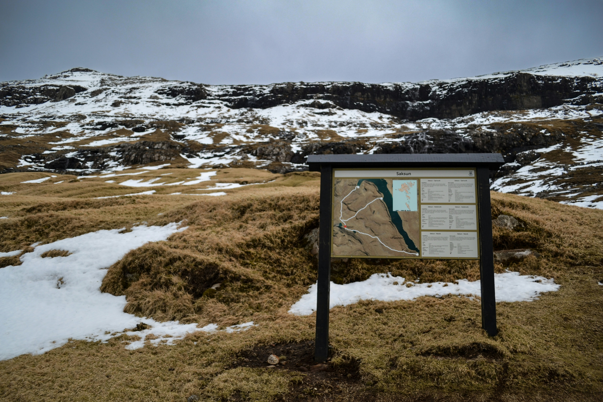

正文
第一章：坐标系和咖啡
世界大地测量系统(WGS84,EPSG:4326): 39°59'N 116°20'E
亲爱的朋友：
每天清晨我用冰拿铁送服一枚蓝色扁平的药丸，非典型抗抑郁药，它有一个绝妙的副作用：降低性欲。性欲消失的我像春天茁壮的小熊，只想四处奔跑打猎，和把重物举过头顶。
这时我会想到因为同性恋遭到迫害的阿兰图灵，他被化学阉割、雌激素注射，最后吃毒苹果自尽。直到2015年以他命名的法案生效，同性恋罪者获得赦免。2015年我学到了人类苦难的深度与广度：不管你怎么搜索，苦难都异彩纷呈地折磨着我们。世界是他们的牡蛎，我们的受难所。你画一条长长的数轴，无性恋对性欲的厌恶、和男同性恋为其性欲正名的渴望，都局促地躺在其上——像火车站消磨时间的农民工，身下铺着破烂的被子。
我痴迷咖啡，喜欢棕色的液体进入胃时轻微的灼烧感。每天我们一起观察咖啡和牛奶在平口玻璃酒杯里交融，玻璃杯厚重又透明。玻璃杯是小猫的反义词，小猫是轻盈柔软的毛球。
在咖啡店里，我们最爱看二流作家，算是性教育。毛姆说“情欲是正常的，而爱情是一种疾病。”里尔克说：“凡是使你集中向上的情感都是纯洁的，对你有所伤害的情感是不纯洁的。”
那时我还不知道：我们对苦难和文学充满同样的理解和想象，解开谜团的路径却各不相同。
一整个下午都轻飘飘地浪费在无用的书本里，然后我们走上嘎吱作响的木楼梯，去护栏不完整的天台看日落。日落也不完整：被八十年代的绿玻璃窗楼吞噬、在还没到地平线的地方有横幅截断。后来我独自去高级写字楼顶层的落地窗、空无一人且充满可疑叫声的森林看过很多残缺的日落，也去舒适地摊在草地上看完整的球形天空；沉浸在橙红色里我开始遗忘对苦难的讨论和咖啡店的平面图。
大部分时候我们只是面对面一言不发地看书：教辅资料、密码学、侦探小说、摄影作品集。它们的封面都是深色的。空调太冷时，我移动到你旁边，属于小猫取暖行为，偶尔我们相邻的手会轻轻触碰。
第二章：高架桥和手掌
一条路：N40°20' W105°40' → N40°33' W105°67'
一些桥：K0+000→ K13+400
亲爱的朋友：
你记得那个冷笑话，父亲让儿子找东西填满房间，一个儿子放了氧气瓶、一个儿子撒了面粉，最后一个大孝子点了蜡烛。
我躺在车里，车藏在森林里；我像舒适的小乌龟寻找时隐时现的萤火虫。萤火虫通体发黄绿色的暖光，而我期待着黑夜穿过我的血液——这样温度刚好。
国家公园日落后关门，但从夕阳沉没到最后光芒之间，足有半小时余晖，这是我最喜欢的时刻，我会等到黑暗完全浸透车窗，再不舍地发动汽车：拿出卷边的地图和打开远光灯。碎石路让我上下颠簸，U形山路上我用油门力度调整车速，过弯时迷醉的风让我回到2020年的高架桥。
和你的分别也像落日的过程。2020年为了躲避他们的跟踪，我们在荒凉的高架桥上像钟摆一样折返散步。抠掉电话卡、关机的手机藏在金属笔盒里，笔盒躺在帆布包里，随着步伐发出悦耳的撞击声。车流在我们身下疾驰，毫不犹豫。挤压的空气震颤，发出低沉的吟唱。我们聊希腊哲学老头。
《会饮篇》里说每个人本来是有四条腿的完整人，到了这世界一分为二。所以人们总觉得若有所失，企图找回自己的“另一半”。我说有没有可能，人本来像千足虫一样，最多有750条腿，值得寻找的几百个朋友遍布五湖四海，于是一辈子都不会孤独？或者人类从来都只有一颗心脏和两条腿，这足够我们翻山越岭，完成逶迤壮阔的冒险，失去任何人都可以继续生活！
你笑了，目送一辆黑色跑车的尾灯。你看别处时，小猫会伸长，用尖尖的爪子扒住裤脚，腿部肌肤可以同时感到微小的拉扯刺痛和柔软的肉垫；有时，小猫会若无其事的用前额标记你的脚踝。而那一刻我也想这样触碰你的手。
朋友可以拉手吗？拙于表达的我试图叠加长长的说辞。我没有强烈的冲动，不想和你交换任何体液，不想把你当做财产，没有承诺和依附的激情。我的性欲平静地隐退，我的爱属于小动物和知识；我只是想触碰你的手。
因为胳膊是最短的路，连接我们不愿弯曲的脊梁。我邀请你一起承重：这是我们在躲避他们监视的眼睛和一层致密的网。这张网里人类以爱情为借口，生殖、欺骗和合法蓄奴。我怕这张网会温柔地包裹你，我亲爱的朋友，它还会切割所有不愿服从的人，碾压我的皮肤和骨骼。
如果你愿意，我们可以一同逃脱，分享山雀的歌和未读的书本；
如果你不愿意，我就不会拉起你的手。
第三章：等高线和教堂
1791年，杜朋特里尔绘制了世界上第一张等高线地形图。等高线用于绘制地貌地势，每条等高线都代表一定的高度。单个等高线闭合，多个等高线不会相交或重合。
亲爱的朋友：
2020年后，我人生的等高线将密集地扰动。此前的夏天，一切还充满蓄势待发的动能，我们在古城游荡，怜悯墙缝里钻出的野草。公交车在烈日中喘息，载着生存与生活的重量，将我们运往郊区的教堂。哥特教堂的外立面，飞扶壁庄重地跃向天际，我爱这种愚蠢的虔诚。如果是末世电影，受惊的松树一定会跳上飞扶壁瞭望，观察疮痍的俗世。
无神论者能走进教堂吗
——无浪漫者能恋爱吗
——无性恋者能做爱吗？
那时我只回答了你第一个问题，而共同的答案早已刻在等高线的间隙里。
我是激进的无神论者，惯于读罗素、听黑金属、顶撞基督教徒。罗素说如果死后看见上帝，会反驳他：“你没有给我足够的证据”。因此，我排斥教堂内部的穹顶和告解室。类似地，哪怕有些人、国家、机器将无性恋视为疾病或异常，我依然会捍卫我的性取向，直到有足够的证据让我停止。
不过，最终我们因为衣服覆盖面积太少而被从门口赶走，虽然亚当一丝不挂。于是我们在发烫的座椅上拆封叛逆教堂的话题：路西法崇拜、恋爱、性。
我时而悄悄走神。恋爱和性于我是擅长却毫无兴趣的学科：学生时代的政治，我能面不改色地分条作答，字迹工整地轻松获得满分。政治是社会工程学与零知识证明的杂交产物，只是表演“我知道你知道”的游戏，调情别无二致。
朋友，关于你恋人的故事，我渴望靠近，却充满理解的隔阂。你像是动物园，充满新奇和令我激动的故事和生机：小水獭掏出口袋里的珍贵石头，貘翘起短短的鼻子，长颈鹿的舌头触碰新鲜嫩叶。而你的恋人，像“非工作人员不得入内”展区里沉睡的雪豹。
我尽量想象，登山时，在数不清的等高线里曲折前行，其间松树和山桂林立，蕨类植物的幼苗是斐波那契螺旋；很偶尔地，在树枝缝隙中远望山脚的聚落。直到顶峰卸下云幕，我们直视打猎归巢的鹰。当山顶的风掀翻我的衣领，谍战片结尾骤然黑屏，我后颈会传来电流的颤动。破译密码后，心脏先短暂紧缩，转瞬泵出血液、直达指尖，我漂浮在清晰的愉悦中：这和浪漫的爱是否相似、这和性高潮是否同名呢？
如果是的，你为什么会因为我的不解而愤怒、因为我的性取向(or lack
thereof!)而渐行渐远呢。我们都困在各自的肉体中，永远无法解读对方的内心，如果浪漫之爱、性爱对象是相交的线条，我们就像等高线从不相交：只有无限靠近的平行。

第四章：路网和家
Google地球是一款Google公司开发的虚拟地球仪软件，它将卫星图、航空照相和GIS数据叠加在地球的三维模型上。
亲爱的朋友：
2021年秋天清晨，秋风抚摸你的棉麻窗帘，寒意轻柔地降临。我梦到一只没有脚的鸟。它每次降落都像铅球砸进泥地，要翻滚几下才停住，掀起扑面而来的土。直到它遇见一群飞行的大雁，才能躲在大雁羽毛间沉沉睡去。
由于神经构造的异常，我的脑中无法生成图像。意思是，当你提起构成主义，我想象不出那些色块与形状，只感到势能在移动，还有关键词“家具”。因此每次想起你，我的脑海中不能浮现你的面容；但我能看到谷歌地球的初始界面——一个完整的地球在浩瀚的深蓝色中，先转动，再放大：从亚欧大陆放大的到我们的祖国，到北方的山河，太行山，最后停在你家门口。
我没有家，但我的心中布满各种坐标系的原点。
前一晚我匆忙逃难，刚出门又回头，抓起了身份证和钢笔。背包空空，资产少得可怜，只能把钢笔墨囊当作取之不尽的弹药库。连滚带爬地进入黑夜贫血的子宫，几公里外，他们的警灯忽明忽暗，不知是在逼近我，还是在追逐别的受难者。
我扣紧夹克，手机屏幕亮起。你还记得小时候博物学树封面的灯笼鱼吗？它在黑暗的深海中游动，头顶的光小而柔，透明昏黄，周围空无一物。
消息只有三个字：“来我家”。于是我把抗议纸牌折起，塞进胸口，让它的纹理烙进我的皮肤。拉紧背包带，沿着矮墙疾行。夜晚比想象中嘈杂。街道上总不缺少匆忙的车流：有人加班、有人出生、有人死亡，有人只是热爱开车。我努力不踩碎脆脆的落叶。白天它们斑斓各异：黄、棕、红、紫，夜晚却一律被喷上黑色的血迹。
冷风掠过脖颈，我想起猎物逃命时不会感到恐惧，只会兴奋，呼吸急促。我生来的腿是为了奔跑，我的嘴是为了撕咬和咒骂。我的手，亲爱的朋友，终于叩响了你的门。
第五章：地铁和床
通用静态交通信息标准(GTFS, General Transit Feed Specification)，是用于定义公共交通时刻表和相关地理信息的通用格式，GTFS时刻表包括路线、站点、时刻表、频率、票价等静态数据。
亲爱的朋友：
2017年我第一次把头埋进小猫的肚子里。它以我两倍的速度呼吸，毛绒绒的肚皮随之起伏，像阳光下的草地。我跪在地上，小猫悬在床沿。我虔诚、无法自控地靠近那颗颤动的温暖毛球，用鼻尖贴近它起伏的原始囊袋。我闻到了琥珀、亚麻、还有图书馆顶楼书架的气味。它的爪子轻轻搭在我的头发上。
那个2021年秋天的晚上，我躺在你的床上，也感受到类似的安静。床单崭新、却带着怀旧的气息；街灯透过窗帘，为被子的褶皱洒下微弱的阴影，你的呼吸带来几乎察觉不到的起伏。
我们保持礼貌的距离，我的嗓子的血腥味，在黑暗中随着呼吸声渐渐溶解。后来，每当我被刻薄的语言、不公的命运切割，我就会想起那个饱满又安全的夜晚。他们的威胁和审问，倏然落成木屋上厚厚的积雪，让我不再需要思考，只是沉入不再疼痛的梦乡。
第二天，阳光穿过棉麻窗帘，树梢无声地投影下，床单斑驳，像一只舒展身体的奶牛猫。我不忍吵醒你，悄悄收拾好背包，没能留下什么便重新开始流浪。扑面的寒意让我清醒，地铁站一如既往地喧嚣。我坐在角落，把手插进口袋，是你给我的水果糖玻璃纸。摸一下，会有弯折的棱角，仿佛还能看见紫色、蓝色和绿色在我掌心里跳舞。
那是我们最后一次见面。你的恋人说，我们不能再当朋友。我隐约记起，你床头的电子琴，桌上那两个排列整齐的游戏手柄，墙上你们的合照。你说，你的恋人对我们曾同床共眠这件事感到愤怒。
2023年，我非常想念你。这份想念没有出口，我知道你会结婚，会牵恋人的手许下承诺。人类是没有发情期的动物，而绝育的小猫不会为爱情和性所困。两只绝育的小猫可以互相当枕头、舔彼此的毛流。
但我们是人类，是被社会规训和约束的人类。我从地铁站的阶梯走上去，天空和云朵拉开忧郁的帷幕。我想起你修剪圆钝的指甲、皮肤紧实的手，拿起罐头喂小猫。这双手将触摸你恋人的身体和灵魂，也将被一枚戒指套牢。

第六章：最短路径算法和爱的深处
Dijkstra算法可以解决图中最短路径问题，计算从一个顶点到其余各顶点的最短路径。
亲爱的朋友：
距离我们分开，落羽杉的叶子已经四次枯萎又复苏，小猫也从出生长到了成年。初夏的落花被践踏和忘记，来年又开出骄傲肆意的花。日子滚滚向前，我大部分时候在森林里，少数时间在电脑前。我的窗边放满了健壮的绿萝，日落时金色的阳光洒在它革制的叶子上，嫩绿透明，最边上又一圈温柔的光圈。叶脉是它的骨骼和血管，又像人生的歧路：密集、繁多。我结交了很多温柔的新朋友：我结交了很多温柔的新朋友：有人类，也有猫猫狗狗和小鸭子。我读得懂猫猫尾巴的语言，也爱反击欺负我的人。遗忘的反义词不是铭记，而是生活；而我每创造一种快乐，就能终结一个悲伤。
窗边放满了健壮的绿萝，日落时金色的阳光洒在它革制的叶子上，嫩绿透明，最边上有一个温柔的光圈。叶脉是它的骨骼和血管，又像人生的歧路：密集、繁多。
我结交了很多温柔的新朋友：有人类，也有狗狗和小鸭子。我读得懂猫猫尾巴的语言，也爱反击欺负我的人。遗忘的反义词不是铭记，而是生活；而我每创造一种快乐，就能终结一个悲伤。
冬天我用呢子大衣裹紧自己，像小乌龟躲进厚实的壳子；在那种大风快要掀翻屋顶的日子，我会想念你作为微小而明亮的奇迹。我会想象，我们在城市里游手好闲地散步，用脚步坚定地洗刷他们的邪恶；我想和你在书店门口见面，去找灰泥土脸的二手诗集，然后你用指尖高亮出最可爱的诗句；我想带你去遥远的森林里探险，看毒蜘蛛连接树枝的网，看坠入水中的粗树干上停歇的大鹭。我想为你画生日贺卡，封面是你喜欢的鱼，再用蕾丝仔细包裹。
每次去旅行我都把行李放在后座，把手指戳在纸质地图的绿色圈圈目的地上，向右倾斜身体，想告诉你：“我们两小时就到哦”，却发现副驾驶空无一人。我想看你终端里的0个报错和50个提醒的运行结果，想看你的取景框，想知道你那些不够道德但令人着迷的秘密。
但这一切都不会发生。我们曾经是朋友，像罗卡定律一样，我相信我身体里也存在着一小小部分的你。我们注定会分道扬镳，但当我关掉台灯，房间里的家具轮廓因黑暗变得模糊时，想到你的玩笑、故事，我好像能感到墙角的萤火虫。
墙角的萤火虫。而有些隐喻我永远无法进入。我永远不能理解人们说“对一个人有好感时，胃里像有蝴蝶”这种比喻：胃里有蝴蝶不会想吐吗？Amatonormativity（亲密范式霸权），指的是“以一对一的爱情为核心的关系才是正常的且必要的”，你们平常说的对恋爱、婚姻的渴望，实际上是对巩固亲密范式霸权的渴望。
为什么性爱只能发生在恋爱关系中？为什么谈论人类的性生活就被视为隐私或冒犯？海胆每年夏天把精液和卵子射向海洋，我们在生殖细胞汤里游泳；松树春天喷射花粉，我们的车上、窗口全都是绿色的精子。这些都很正常。想到恋爱和性行为，我后脑壳发麻，感到一阵浩荡的无聊。我选择成为一个无性（asexual）的人，而我不太喜欢“无性恋”这个翻译，因为我并不需要“恋爱”。
我不理解：我想和很多人成为亲密朋友，而朋友也应该有各自的朋友；我不想成为图数据中仅有一条边且边权为无穷大的节点。我痛恨恋爱，恋爱让我头疼脑热，我的恋爱都以我努力忍住杀死恋爱对象的冲动，并其分手告终。高中时同学跟我说，我喜欢你，可以和你谈恋爱吗？我说，不行，但是我们可以做爱。后来我发现做爱也没什么意思，裤裆里那点儿事，还是自己解决最好。我太完整了，没办法拥抱任何人的残缺。我想完整地、郑重地作为朋友爱你。
而爱到深处是政治，当我们靠得太近，我们不得不通过离别宣誓自己的立场。亲爱的朋友，如果世界不能理解我，那是世界的残疾；你不理解我，那只是像精致瓷器上微小的缺口。你是一个美好的人类，有饱满的釉彩，只是我需要离开了。
哦对，绿萝非常好养。我每周浇一次水，每月剪去过多的枝叶，它们通过无性繁殖繁衍出二十余盆兄弟姐妹。我看，无性的植物也过得挺幸福。